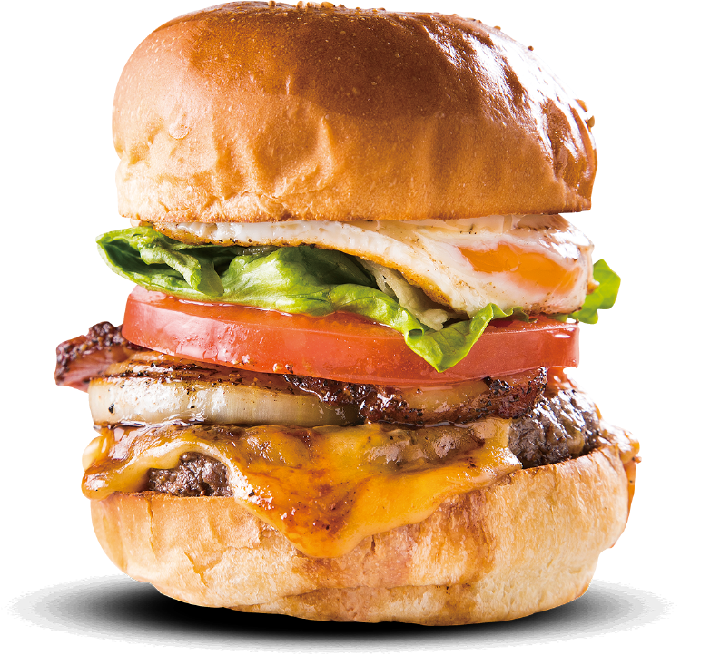

CONCEPT
創業昭和57年、近江牛焼肉の慶州がプロデュースする
近江牛100%のグルメバーガーショップ
2021年、滋賀県草津市にオープンした、近江牛100%本格グルメバーガーショップ「COWSCROWN」。近江牛を知り尽くした、滋賀県で不動の人気を誇る焼肉店「慶州」のセカンドブランドです。
つなぎを一切使わない近江牛100％のパティが当店の主役。地元のパン屋から特注した手作りバンズと、自家製ソースを組み合わせて、パティとの相性を徹底追求しました。溢れる上質な肉汁が口の中に広がる最高の贅沢を。肉好きのあなたのために、肉屋が本物のハンバーガーをご提供します。
